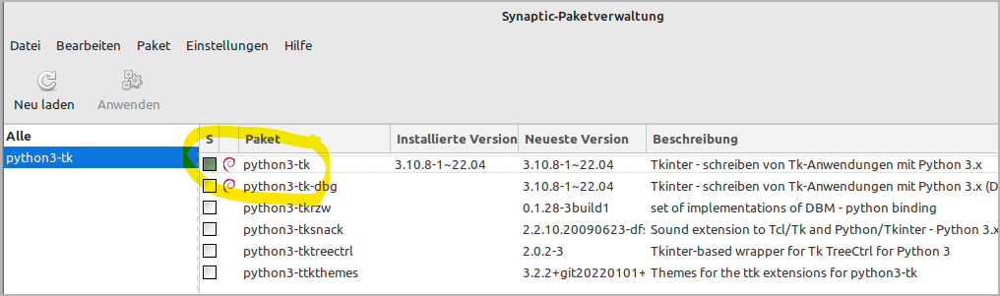
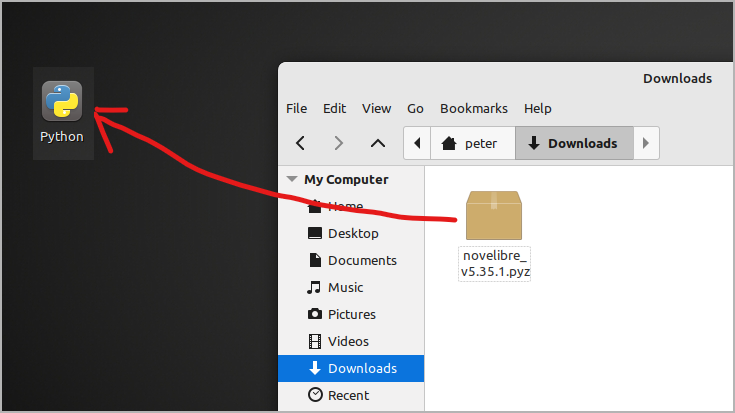
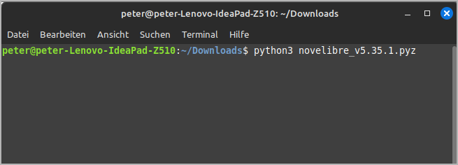
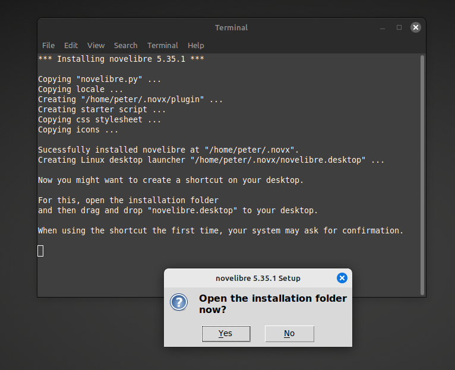
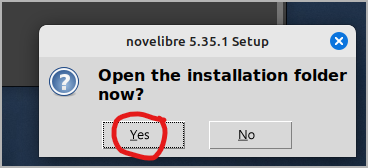
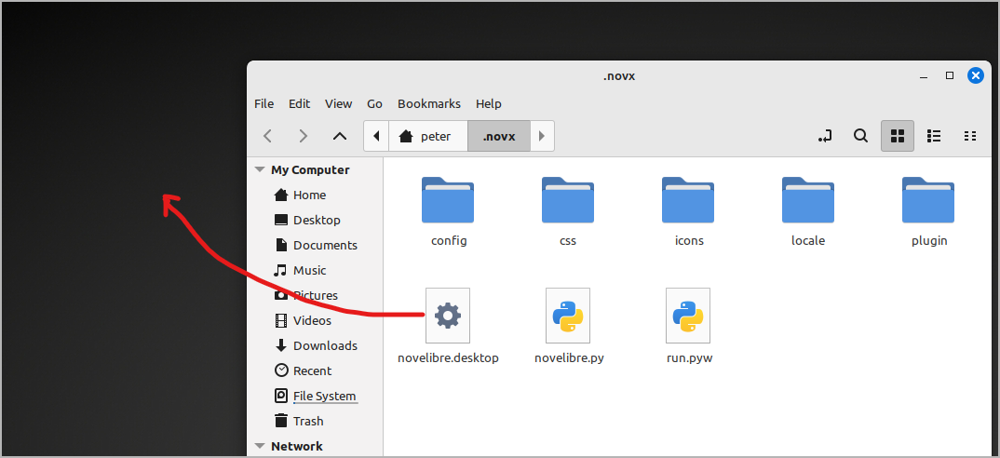
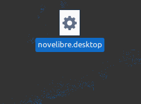
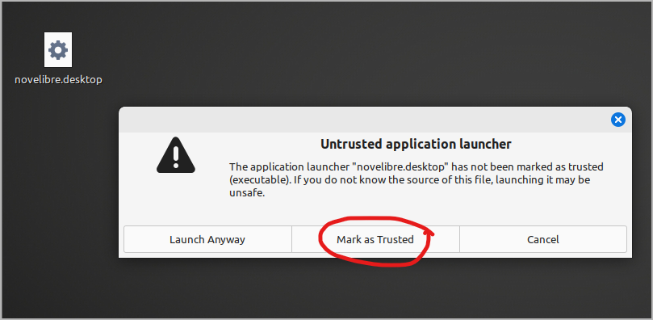
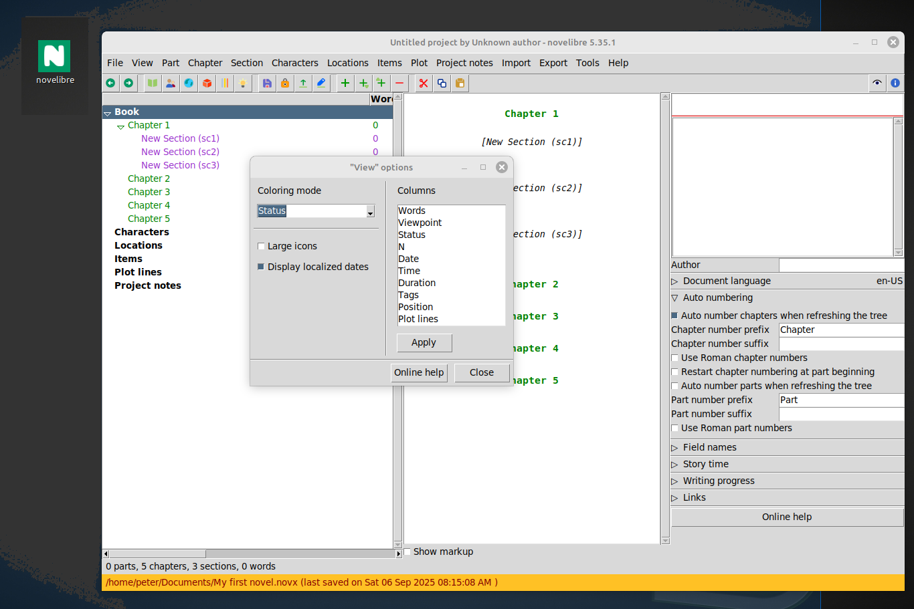
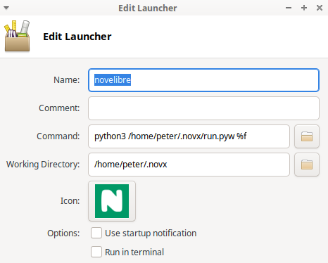

Installation under Linux
Before you can install novelibre on Linux, you must ensure that the prerequisites mentioned on the project home page are met. In particular, support for tkinter must be installed on your system. For Ubuntu, the package is called python3-tk for example, for Fedora it may be python3-tkinter. Installing the idle3 package is optional but recommended.
Just lauch your package manager and look for the corresponding package. Here is an example for Linux Mint:
If necessary, have this package installed before starting the novelibre installation.
The actual installation of novelibre is simple and straightforward. The installation program automatically creates an installation directory, copies everything necessary into it, and generates a start file named run.pyw adapted for the respective computer, which must be called in order to execute novelibre.
The necessary manual work consists of linking this start file to the desktop.
Installing the application
- Step 1
Either drag/drop the downloaded novelibre_vx.x.x.pyz onto the Python application launcher,
or open a console window in the Download folder and execute
python3 novelibre_vx.x.x.pyzon the command line.
“x.x.x” means the version number.
In both cases, a success message should appear.
Hint
If you have not set up a Python application launcher, you can download the one I’m providing on the novelibre home page. Place it either on your Linux desktop or in the download folder. This is worthwhile with regard to the installation of plugins and updates.
Making novelibre accessible on the Desktop
- Step 2
Open the installation folder.
- Step 3
Drag and drop novelibre.desktop onto the desktop.
This creates a launcher to start novelibre from the desktop.
- Step 4
When you click (or double-click) for the first time, a warning message may appear to prevent you from accidentally installing an executable file.
If you mark the application launcher as trusted, the icon in Linux Mint will change to the novelibre program logo, and you can start the application by clicking on it.
Now you can also drag and drop .novx project files onto this shortcut.
Hint
If the steps 2 and 3 wouldn’t work on your Linux desktop, you will have to set up a application launcher yourself. This is a matter of calling python3 with /home/your-username/.novx/run.pyw and an optionally specified file as parameters. You get a desktop icon to click on and to open your .novx project file via drag-and-drop.
With the XFCE desktop, for example, my launcher command is:
python3 /home/peter/.novx/run.pyw %f

You might have to copy the novelibre icons to a dedicated image directory where your application launcher gets the icons from. You also may want to set novelibre as standard application for files with the .novx extension, and assign them the novelibre logo as file icon.
If you succeed, feel free to share your experience in the novelibre “Discussions” forum
- Step 5
It’s a good idea to register the novx extension in the mimetypes as text/xml, so it can be opened with your web browser for display, using the novx.css style sheet.
Updating the application or a plugin
Just execute the first step as described above. If there is any further action required, the setup script will give you a message.